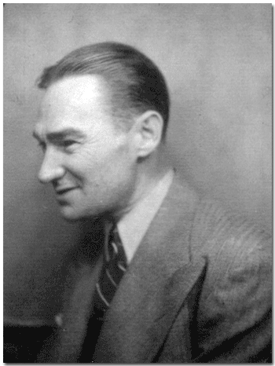
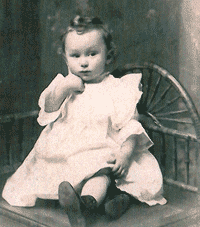
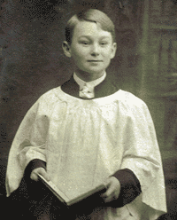
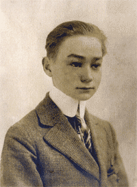

|
 Robert Boyd Henderson Jr. 1900 - 1941 Robert
B.
Henderson Jr. was the son of Robert B. and Elizabeth E. Castell.
He married Anna Mae Snell and had one child, Robert B.
Henderson III. |
||
Important
Facts |
||
| May 9, 1900 | Robert B. Henderson Jr. was the son of Elizabeth E. Castell and Robert B. Henderson Sr. Robert is listed under births reported in 1900, Borough of Brooklyn. Certificate Number 8516. Source: Ancestry.com. New York City Births, 1891-1902: MyFamily.com, Inc., 2000. Original data: New York Department of Health. Births reported in the city of New York, 1891-1902. New York, NY: Department of Health. |  Robert Henderson - 2 years old Kopke, 479 Fulton St., Brooklyn |
| June 5, 1900 | The 1900 US Census listed Robert B. Henderson Jr., grandson (1 month) , living with his father Robert B. (20), mother Elizabeth L. (20), living with his wife’s parents, Mr. and Mrs. E. W. Castell on 260 Schermerhorn Street, Brooklyn, New York. Source: 1900 United States Federal Census, Brooklyn Ward 3, Kings, New York; Roll: T623 1043; Page: 5B; Enumeration District: 24. |
|
April
17, 1910 |
The 1910 US Census for Brooklyn,
Kings County, New York lists Robert B. Henderson (31 - Dry Goods),
Lillian E. (31), and Robert B. Jr. (9), living with the Castell family
at 260 Schermerhorn Street, Brooklyn, NY. Source:1910
United States Federal Census, Brooklyn Ward 3, Kings, New York; Roll:
T624_955; Page: 4B; Enumeration District: 28; Image: 859. |
 R. B. Henderson Jr. Choir Member |
abt. 1911 |
Robert Henderson Jr. was most likely a choir member in one of the local churches in Brooklyn. | |
1920 |
The 1920 US Census for Brooklyn, New York lists Robert B. Henderson (40 - waiter in a restaurant), married to Lilly E. Henderson (40), Robert B. Jr. (19 - single, working in Electric Co.), Jessie L. Castell (48), and Carrie L Johnson (80), living at 260 Schermerhorn Street, Brooklyn, NY. Source: 1920 United States Federal Census Brooklyn Assembly District 10, Kings, New York; Roll: T625_1159; Page: 9B; Enumeration District: 539; Image: 40. |
|
1930 |
The 1930 US Census for Brooklyn, New York lists Robert B. Henderson (51 - waiter at hotel), his wife Lilly (50), their son Robert Jr., (30 - single), Gertrude Castell (Niece - 17), and Jessie Castell (Cousin - 59), rented a houe at 36 Greene Avenue, Brooklyn, NY. Source: 1930 United States Federal Census: Brooklyn, Kings, New York; Roll: 1512; Page: 15A; Enumeration District: 52; Image: 219.0. |
 Robert B. Henderson Jr. |
September 3, 1938 |
Robert B. Henderson Jr. (38 - Investigator) married Anna Mae Snell (18 - domestic) in Elkton, Maryland. Residence of bride and goom was Brooklyn, NY. Souce: Marriage License, Cecil County, Maryland, No. 36811. | |
March 11, 1941 |
Robert B. Henderson Jr. died of Congestion of Viscera. His father, Robert B. Henderson Sr., signed his son's death certificate. He was buried in the Cypress Hills Cemetery, in Brooklyn, New York. Source: Certificate of Death, Department of Health, Borough of Brooklyn; # 5801; filed March 13, 1941. | |
March 15, 1941 |
Robert B. Henderson Jr. was buried in the Cypress Hills Cemetery, in Brooklyn, New York. Source: Plot No. E 1/2, #215, Section 5. | |
June 10, 1941 |
Robert Boyd Henderson was born in Brooklyn, New York. Source: Department of Health, City of New York, Certificate of Birth Registration; Number 19593; Place of birth: Jewish Hospital, Borough of Brooklyn. |

Last update: Sunday, May 4, 2008